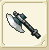
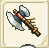
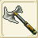
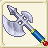
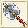

| 斧作成 | |||||
| 画像 | 名称 | 性能 | 材料 | ||
| 台湾表示 | |||||
| 斧作成Lｖ１ | |||||
|  | ハンドアクス | ATK+15〜+30 DEF-2 AGL-6〜-5 CRI+18 |
銅4 バルサ20 |
||
| 手斧 | |||||
| フランキスカ | ATK+22〜+44 DEF-3 AGL-9〜-7 CRI+18 |
銅4 鉄3 バルサ20 |
|||
| 勇氣之斧 | |||||
| 斧作成Lv2 | |||||
|  | ブロードハンドアクス | ATK+29〜+58 DEF-4 AGL-12〜-10 CRI+18 |
銅7 鉄4 バルサ20 モミ20 |
||
| �ｪ手斧 | |||||
| ウォーハンドアクス | ATK+36〜+73 DEF-54 AGL-15〜-12 CRI+18 |
鉄10 銀5 バルサ20 モミ20 |
|||
| 戰鬥手斧 | |||||
| 斧作成Lv3 | |||||
| バトルハンドアクス | ATK+43〜+84 DEF-6 AGL-18〜-14 CRI+18 |
銅9 鉄5 銀5 イエローメランチ20 |
|||
| 格鬥手斧 | |||||
| スティールアクス | ATK+50〜+102 DEF-7 AGL-21〜-17 CRI+18 |
銅10 鉄9 純銀4 イエローメランチ20 |
|||
| 鋼斧 | |||||
| 斧作成Lv4 | |||||
| ミドルアクス | ATK+57〜+116 DEF-8 AGL-25〜-19 CRI+18 |
銅8 鉄8 銀7 純銀3 ツガ20 |
|||
| 長戰斧 | |||||
| ダブルアクス | ATK+64〜+131 DEF-9 AGL-27〜-22 CRI+18 |
鉄10 銀7 純銀5 金4 バルサ20 |
|||
| 雙刃斧 | |||||
| クイーンブレス | RCV+2〜+5 CRI-1〜+1 CTR-1〜+1 HIT-1〜+1 AVD-1〜+1 クエストで使用 |
純銀5 銀1 金1 チタン鉱石20 フローズンアイリス20 |
|||
| 斧作成Lv5 | |||||
| バスターアクス | ATK+71〜+145 DEF-10 AGL-30〜-26 CRI+18 |
銀10 純銀10 金5 モミ20 ヒバ20 |
|||
| 鉤爪斧 | |||||
| ビックブロードアクス | ATK+78〜+160 DEF-11 AGL-33〜-26 CRI+18 |
鉄10 銀10 純銀10 白金2 ヒバ20 |
|||
| 闊刃斧 | |||||
|  | ドランボルレグ | ATK+102〜169 DEF-10 AGL-24〜29 CRI+18 CTR+1〜4 ＨＩＴ+3 |
ヒバ20 白金2 アルマイト7 純銀7 鉄10 |
||
| 鑽保雷格之斧 | |||||
| 斧作成Lv6 | |||||
| ラージバルテッシュ | ATK+85〜+169 DEF-12 AGL-36〜-30 CRI+18 |
純銀10 金10 白金6 メランチ20 アカマツ20 |
|||
| 彎月大戰斧 | |||||
| ラージブロードアクス | ATK+92〜+189 DEF-13 AGL-39〜-31 CRI+18 |
銀8 純銀10 金10 ミスリル鋼2 アカマツ20 |
|||
| 大型闊刃斧 | |||||
| 斧作成Lv7 | |||||
| ラージダブルアクス | ATK+174〜+218 DEF-15 AGL-45〜-36 CRI+18 |
鉄20 白金12 ミスリル鋼6 ヒバ20 アカマツ20 |
|||
| 大型雙刃斧 | |||||
| ビッグカイザーアクス | ATK+119〜+151 DEF-14 AGL-38〜-34 CRI+36 |
純銀20 白金10 ミスリル鋼10 ホオノキ20 誓いの証20 |
|||
| 超大皇帝斧 | |||||
| 水龍の斧 | ATK+218 DEF+25 CRI+18 |
ミスリル鋼20 マイティ２ 魔族のクリスタル2 錆びた斧1 |
|||
| 水龍之斧 | |||||
| 斧作成Lv8 | |||||
| バルディッシュ | ATK+185〜+242 DEF-16 AGL-48〜-39 CRI+18 |
金13 白金10 ミスリル銀10 アカマツ20 ホオノキ20 |
|||
| 新月斧 | |||||
| ミノタウロスの戦斧 | ATK+209〜+255 DEF-70 CRI+18 |
純銀10 ミスリル鋼10 ミスリル銀10 スギ20 魔族のクリスタル1 |
|||
| 米諾陶斯戰斧 | |||||
| ラージダブルアクス＋ | ATK+183〜+227 DEF-12〜-10 AGL-38〜-28 CRI+18 CTR+1〜+3 |
ミスリル鋼20 ミスリル銀12 スギ20 永久氷石20 ブルードラゴンの鱗20 |
|||
| 大型雙刃斧+ | |||||
| 斧作成Lv9 | |||||
| ロッコバーアクス | ATK+230〜+287 DEF-19 AGL-54〜-50 CRI+18 |
白金10 ミスリル鋼10 レグネシウム10 ホオノキ20 スギ20 |
|||
| 薄刃鉤爪斧 | |||||
| ラージクレセントアクス | ATK+239〜+288 DEF-29 AGL-50 CRI+21 乾坤一擲消費FP変化 |
金10 ミスリル銀10 レグネシウム10 ヒノキ20 誓いの証2 |
|||
| 彎月長柄斧 | |||||
| 斧作成Lv10 | |||||
| トゥハンデットポーンアクス | ATK+280〜+283 DEF-21 AGL-63〜-54 CRI+18 |
ミスリル鋼10 ミスリル銀10 オリハルコン8 スギ20 ヒノキ20 |
|||
| 金屬重斧 | |||||
| エグゼキューショナーズアクス | ATK+320〜+321 DEF-40 AGL-70 CRI+18 乾坤一擲消費FP変化 |
オリハルコン14 トネリコ20 誓いの証2 マイティナイト2 魔族のクリスタル2 |
|||
| 處刑斧 | |||||
| 斧作成Lv11 | |||||
|  | コクマッシュ | ATK+267〜279 CRI+12 | トネリコ40 ダマスクス鉱8 ミスリル銀8 レグネシウム6 マイティナイト2 |
||
| 高速斧 | |||||
|  | ホドンニス | ATK+380〜382 DEF-23 AGL-86 CRI+36 |
トネリコ40 ミスリル鋼9 ミスリル銀10 ダマスクス鉱3 魔族のクリスタル2 |
||
| 重撃斧 | |||||